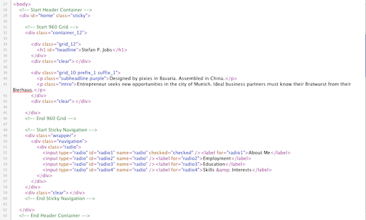

Created: 31/03/2011
By: helipad
Email: themeforest@joewesthead.com
Thank you for purchasing my theme. If you have any questions that are beyond the scope of this help file, please feel free to email via my user page contact form here. Thanks so much!
This theme is a fixed layout with one column. The header content (everything above the navigation) is contained in a div called "home". The navigation appears inside a wrapper called "navigation". The rest of the content slides beneath the navigation in a div called "slidey" :)
If you would like to edit the color, font, or style of any elements in one of these columns, you would do the following:
a {
color: #someColor;
}
If you find that your new style is not overriding, it is most likely because of a specificity problem. Scroll down in your CSS file and make sure that there isn't a similar style that has more weight.
I.E.
a.text-link {
color: #someColor;
}
So, to ensure that your new styles are applied, make sure that they carry enough "weight" and that there isn't a style lower in the CSS file that is being applied after yours.
I'm using five CSS files in this theme. A generic reset file, a typography file, a 960px grid system, a general stylesheet and a stylesheet specifically for jQuery UI elements.
The general styles.css file is separated into sections using:
/* Start Universal Styles */ some code /* End Universal Styles */ /* Start Headings */ some code /* End Headings */ /* Start Sticky Navigation */ some code /* End Sticky Navigation */ etc, etc.
If you would like to edit a specific section of the site, simply find the appropriate label in the CSS file, and then scroll down until you find the appropriate style that needs to be edited.
This theme imports five Javascript files.
I've used the following scripts as listed.
Once again, thank you so much for purchasing this theme. As I said at the beginning, I'd be glad to help you if you have any questions relating to this theme. No guarantees, but I'll do my best to assist. If you have a more general question relating to the themes on ThemeForest, you might consider visiting the forums and asking your question in the "Item Discussion" section.
Joe